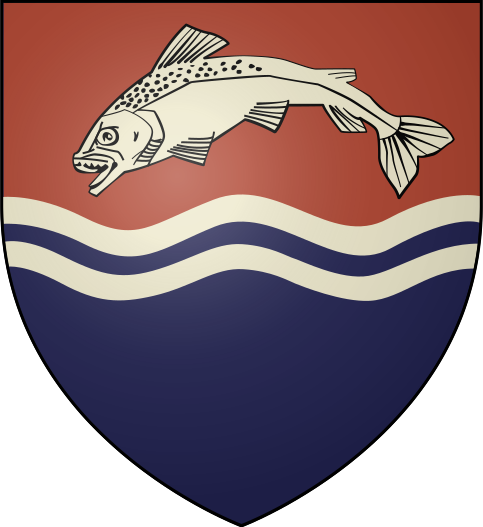

I think my totem animal would be trouts.
The first reason I think is because a trout is one of the simbols of the house of Tully and their banner is very beautiful and the colors are great, look:

Here some facts about trouts:
- Trout are freshwater fish that belong to the Salmonidae family.
- They are known for their distinctive spotted pattern and colorful flesh.
- Trout are popular game fish and are often sought after by anglers for their challenging fight.
- There are several species of trout, including rainbow, brown, brook, and cutthroat trout.
- They inhabit cold, clear streams, rivers, and lakes, and are sensitive to pollution and changes in water temperature.
- Trout are carnivorous and feed on insects, small fish, and crustaceans.
- They are known for their delicious taste and are often sought after for their culinary qualities.